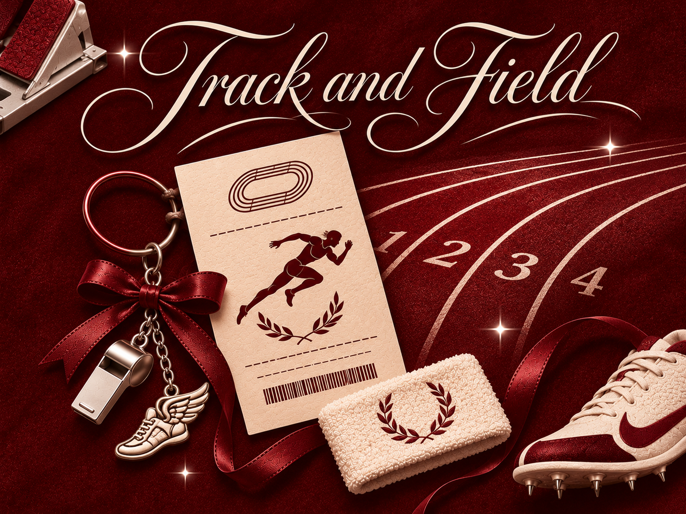
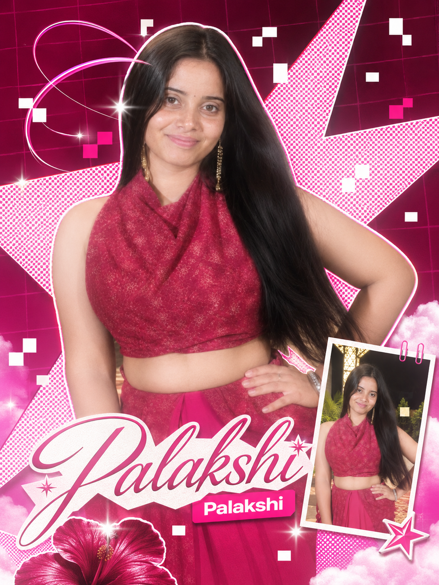
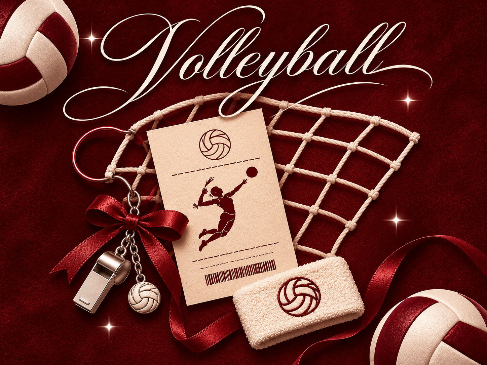
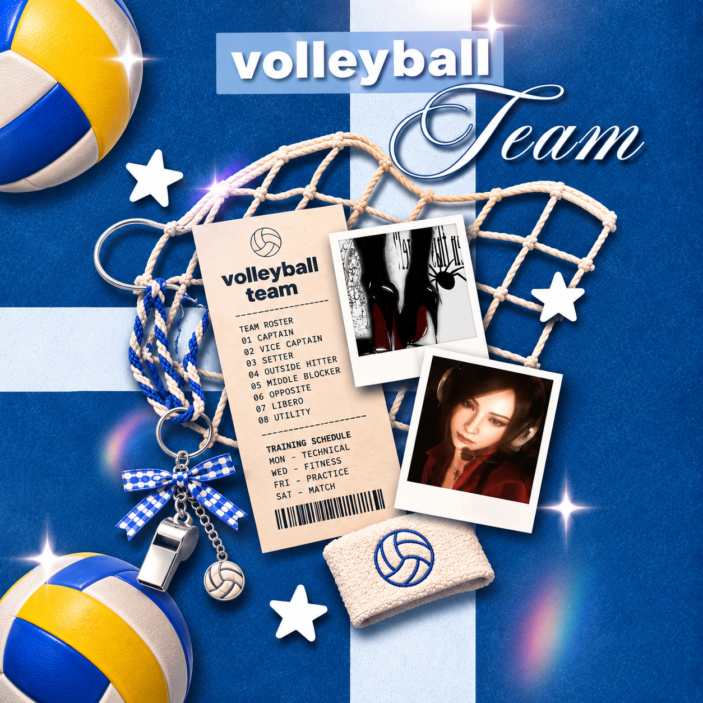
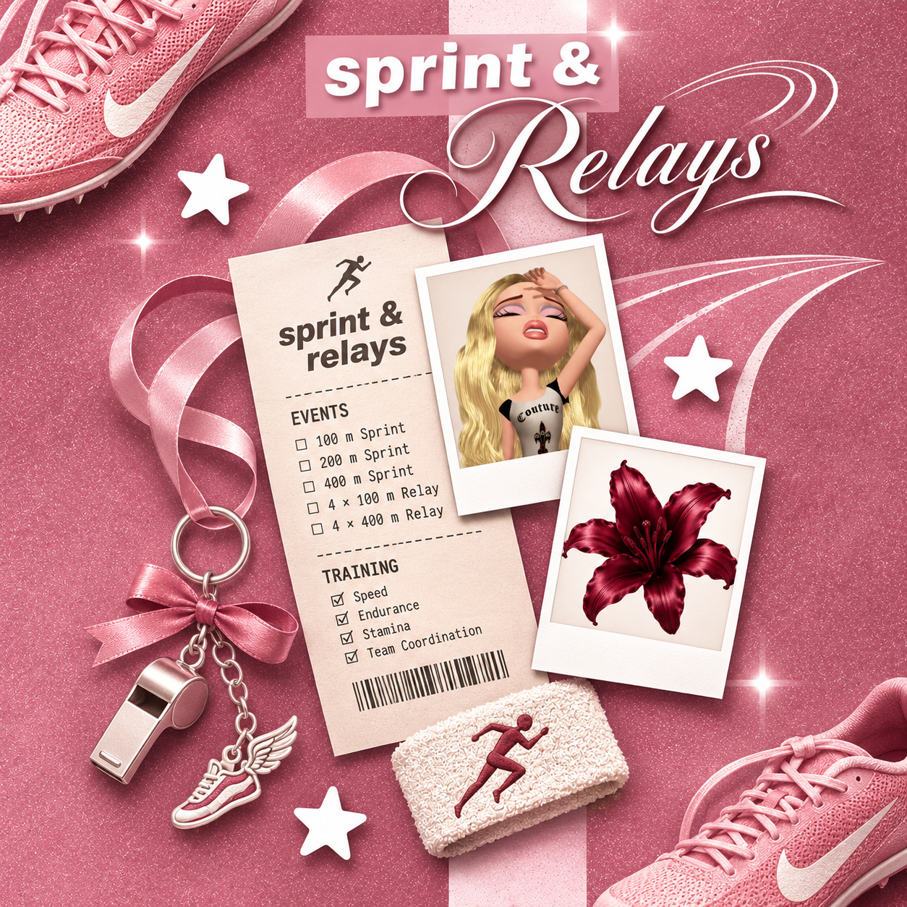
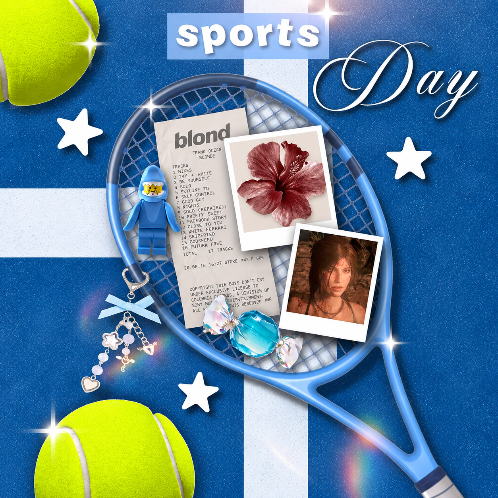

Undergraduate in Business Administration — Bringing athletic grit, focus, and leadership into business management.
Welcome to my personal resume website. Grounded in the discipline of competitive track and field and court volleyball, I combine physical resilience and focused team dynamics with my studies in business administration.

Sprints, speed, and mental stamina across school and district meets.

1st Year Management Undergraduate at IIM Bangalore.

Court strategy, agility, and collaborative team communication.
Combining competitive sportsmanship and discipline with academic coursework in business administration.
I am a first-year BBA DBE (Digital Business and Entrepreneurship) undergraduate student with an active competitive background in school and district athletics.
Years of early-morning training sessions, competition schedules, and athletic tournaments have deeply shaped how I approach every challenge: with consistency, resilience, and a straightforward, no-nonsense mindset. Whether executing track events or collaborating on the volleyball court, I believe authentic performance comes from daily preparation.
As I progress through my business administration degree, my goal is to channel this athletic grit into modern business leadership, operational management, and organizational teamwork.
BBA DBE (Digital Business and Entrepreneurship)
1st Year Undergraduate (Pursuing)
Track & Field · Volleyball
Lucknow Public School
Athletics is more than competition — it is the foundation of my work ethic, mental resilience, and collaborative spirit.

Developing court awareness, rapid decision-making, and high-trust team communication.

Competing in inter-school and district-level athletics tournaments, building pace and focus.

Managing track logistics, event scheduling, and volunteer coordination during sports meets.
Every milestone on the track begins with showing up when nobody is watching.
Maintaining clear focus under high-pressure competitive match conditions.
Understanding that individual strength only shines when elevated by team trust.
IIM Bangalore
Currently in 1st Year, studying the foundational pillars of business enterprise, organizational behavior, managerial accounting, and business communication.
Lucknow Public School
Completed secondary education with active participation in sports tournaments, annual athletics meets, and extracurricular school activities.
Lucknow Public School / Annual Meet
Served on the organizing committee responsible for planning and executing inter-house and inter-school track and field tournaments.
Undergraduate Initiatives
Actively seeking summer internship opportunities in business operations, marketing coordination, and event management to expand practical skills.
Applying theoretical business concepts and event coordination principles to real-world scenarios.
A comprehensive operational blueprint designed to optimize event scheduling, equipment allocation, and athlete flow during multi-event track meets. Focused on time-efficiency and track turnaround speed.
An academic study analyzing the psychological and organizational parallels between high-performing athletic teams and modern corporate management structures, emphasizing communication and goal alignment.
A structured overview of practical managerial, digital, and athletic capabilities.
| Category | Skills & Methodologies | Proficiency |
|---|---|---|
| Leadership & Operations | Event Coordination, Time Management, Goal Setting, Team Leadership, Problem Solving under pressure. | Advanced |
| Business Tools | Microsoft PowerPoint (Presentations), MS Excel (Spreadsheets & Data), MS Word, Canva. | Core |
| Communication | Public Speaking, Straightforward Communication, Inter-house Team Coordination, Conflict Resolution. | Practical |
| Athletics | Track & Field (Sprints/Relays), Volleyball Tactics, Physical Conditioning, Sportsmanship. | Competitive |
Personal pursuits that provide balance, inspiration, and creative energy.
Exploring books and articles on mindset, leadership biographies, and reflective personal development that inspire deeper thinking.
A daily companion during training sessions and quiet study hours, providing energy, rhythm, and mental reset.
Committed to daily physical health, agility drills, and the lasting mental clarity that comes from athletic discipline.